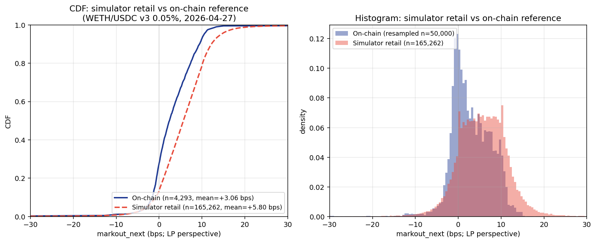
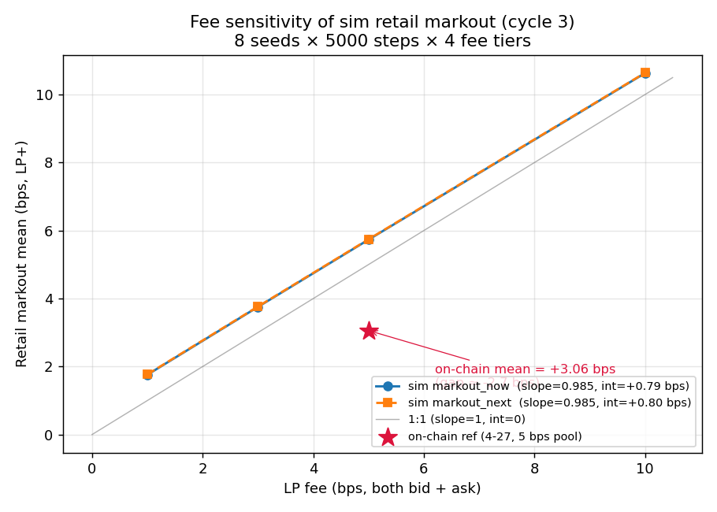
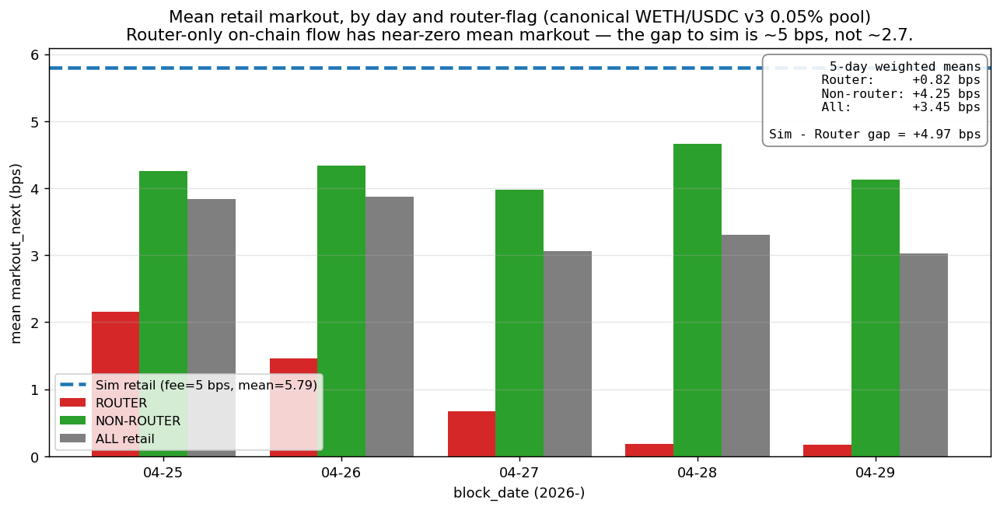
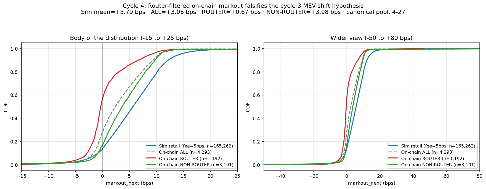
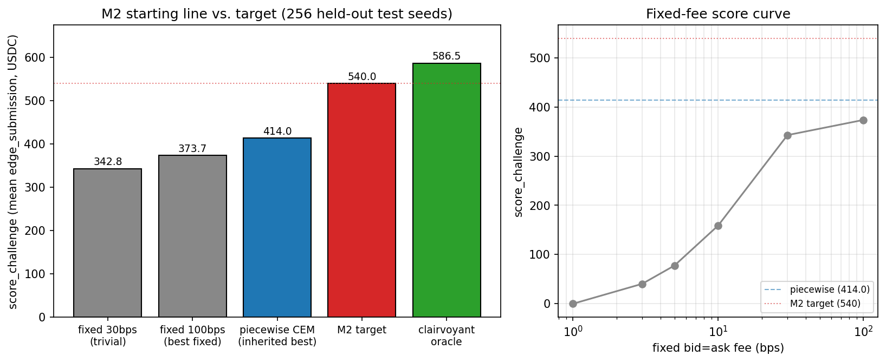
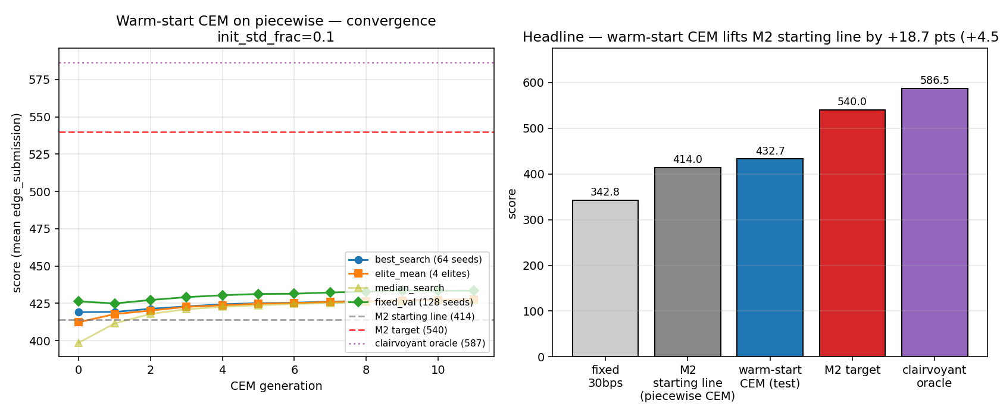

32 seeds × 10,000 12-second steps each (≈2½ days of simulated time
per seed) of the exact simple-AMM simulator in
real_data mode, with both submission and normalizer venues
running a fixed 5-bps fee — matching the canonical pool's tier. We
recorded every retail-routed trade with its executed price and the
fair price one block (12 s) later, then computed
markout_next from the LP's perspective:
log(ref_price / executed) for trades where the AMM bought X,
log(executed / ref_price) for trades where the AMM sold X.
Total: 165,288 retail trades.
Ground truth: uniswap-labs.research.markout_prod,
canonical pool 0x88e6a0c2...5640, 2026-04-27, n=4,293
swaps, $40 M USD volume; 200-bin APPROX_QUANTILES dump
because pulling the raw rows for one day exceeds BQ's 1 GB
billed-bytes ceiling. We also pulled per-day summaries for 2026-04-25
through 2026-04-29 to gauge day-to-day variability of the reference
(see research/experiments/2026-04-30-2240-m1-baseline-markout/results/bq_daily_summary.json).
| stat | on-chain (BQ, 4-27, n=4,293) |
sim retail markout_now (n=165k) |
sim retail markout_next (n=165k) |
delta (sim_next − chain) |
|---|---|---|---|---|
| mean (bps) | +3.06 | +5.79 | +5.80 | +2.74 |
| std (bps) | 5.23 | 5.80 | 9.82 | +4.59 |
| p1 (bps) | -10.14 | -0.05 | -8.54 | +1.60 |
| p5 (bps) | -2.91 | +0.06 | -2.80 | +0.11 |
| p25 (bps) | -0.24 | +1.95 | +1.86 | +2.10 |
| p50 (bps) | +2.42 | +5.68 | +5.67 | +3.26 |
| p75 (bps) | +6.43 | +9.48 | +9.44 | +3.01 |
| p95 (bps) | +10.48 | +11.10 | +14.41 | +3.93 |
| p99 (bps) | +13.35 | +14.11 | +21.14 | +7.79 |

markout_next from the sim retail trades (red dashed,
n=165,262) and the on-chain canonical pool on 2026-04-27 (blue solid,
n=4,293). Both unimodal and right-skewed; the sim curve is shifted
right by ~2-3 bps across the whole interquartile range. Right:
histogram view of the same two distributions, with the on-chain
reference resampled from its quantile grid for visual density.The simulator captures the qualitative shape of LP markout remarkably well: both distributions are unimodal, right-skewed, bounded near the fee value on the upper end, and dominated by mass between roughly -5 and +12 bps. Markout-now std is essentially identical (sim 5.80 vs on-chain 5.23 bps), which means the trade-size distribution and the AMM's per-trade impact-vs-fee math are calibrated reasonably well — the simulator's per-trade volatility is on target.
The level of the simulator is too LP-favorable. Mean shifted +2.74 bps, p25/p50/p75 each shifted by +2 to +3 bps, sim's p5 (-2.80) is roughly where the on-chain p5 sits but every percentile above that is too high. This is exactly the signature of a missing constant per-trade tax on the LP — i.e. there's a mechanism on-chain that takes ~2-3 bps off every retail fill, which the simulator's polite Poisson retail doesn't reproduce. The leading candidate is MEV / fast-CEX adverse selection: when the chain price moves before the next block, fast actors snipe the AMM and the LP gives up the move. The simulator's arb actor only acts at discrete steps and only after price has already moved, so it can't inflict the same drag on the LP.
markout_next sayThe right tail of markout_next is too fat in the
simulator (sim p99 = +21.1 vs on-chain +13.4). This is mostly a
between-trade-and-next-step price drift artefact: the regime-switching
tape draws one log-return per 12 s step, but on-chain the +12s
benchmark is constructed from real market timestamps where individual
trades land at fractional block positions. So the simulator's "fair
price one block later" carries the full per-step variance, while the
on-chain version carries less.
The left tail of markout_next is closer (sim p1 = -8.54
vs on-chain -10.14). The on-chain reference still has an extra
percentage point of left-tail mass, again consistent with sniping —
some fraction of on-chain retail fills get hit by a sharp adverse move
the moment they execute.
Going-in prior was "body matches, tails don't." Reality is closer to "shape matches, but the level is biased by a near-constant ~2-3 bps shift across the entire interior of the distribution." That's a much stronger and more useful claim — it suggests one missing mechanism (MEV) is responsible for most of the gap, rather than a diffuse mismatch in many small details.
markout_prod doesn't expose a router-vs-bot flag, so the
on-chain comparison set is "all trades on the canonical pool" — which
mixes router (~30%) with arb / MEV bots (~70% by count). The simulator
is generating only the router-equivalent flow plus an arb actor; the
gap between sim and chain may be partly that the on-chain mix is
weighted toward different trade populations. A natural cycle-3
follow-up is to filter the on-chain set to router-originated
transactions only and re-run the comparison.
Cycle 3 was supposed to run three sub-tasks: (a) router-filtered on-chain pull, (b) seed-split replicate, (c) multi-day on-chain stitch. The BigQuery MCP tool was unresponsive throughout cycle 3, blocking (a) and (c). We executed (b) and added a fee-sensitivity sweep that provides BQ-independent evidence for the same hypothesis.
32 fresh seeds (100..131) of the same realistic-mode setup as cycle 2:
| retail markout (bps) | cycle 2 (seeds 0..31) | cycle 3 (seeds 100..131) | delta |
|---|---|---|---|
| mean now | +5.795 | +5.780 | −0.015 |
| mean next | +5.795 | +5.796 | +0.001 |
The +2.74 bps shift vs on-chain reproduces exactly. Not a 32-seed artefact.
Eight fresh seeds × 5,000 12-second steps × four fee tiers
(1, 3, 5, 10 bps). For each tier we recorded retail-only
markouts and fit a line:
| fee (bps) | retail markout_now mean (bps) | retail markout_next mean (bps) |
|---|---|---|
| 1 | +1.76 | +1.77 |
| 3 | +3.75 | +3.77 |
| 5 | +5.73 | +5.74 |
| 10 | +10.63 | +10.64 |
Linear fit: slope = 0.985, intercept = +0.79 bps
(both now and next). So sim retail markout =
fee + 0.79 bps across the 1–10 bps range.

Cycle 4 unblocked the router-filtered pull. The cycle-3 SQL
template did a JOIN against uniswap-allium.ethereum.dex_trades
on transaction_hash — that blew the 1 GB billed-bytes
ceiling. Cycle 4's first finding: markout_prod already has
a transaction_to_address column, so the JOIN is unnecessary.
Direct LOWER(transaction_to_address) IN UNNEST(router_list)
on markout_prod brings each canonical-pool day to a few
hundred MB. We pulled 5 days (4-25..4-29) and 100-bucket
APPROX_QUANTILES for the canonical day (4-27).
| group | 5-day n | 5-day mean (bps) | 5-day USD | interpretation |
|---|---|---|---|---|
| Sim retail (fee=5 bps, seeds 0..31) | 165,288 | +5.79 | — | Cycle-2 baseline; impact dist fitted on router-only on-chain swaps |
| On-chain ALL retail | 22,481 | +3.45 | $169 M | Cycle-2 reference (apparent gap = -2.34 bps) |
| On-chain ROUTER ONLY | 5,277 | +0.82 | $101 M | Apples-to-apples vs sim — gap = -4.97 bps |
| On-chain NON-ROUTER | 17,204 | +4.25 | $68 M | Direct-pool calls; close to fee |


Routers carry more adverse selection on the pool side, not less. Aggregator users tend to trade larger sizes (avg $19k/trade router vs $4k/trade non-router) and route at moments when price impact opens up — i.e. their fills are correlated with short-term Binance moves in their direction. The simulator's empirical retail-impact distribution was fitted from this same router population, but the fit captures magnitudes of price impact, not informedness: sim trades are uniformly random with respect to forward Binance drift, real ones are not.
Quantitatively, the simulator over-credits the LP by ~5 bps on router-equivalent retail flow — about one whole 5-bps fee. To close this gap, the simulator would need either (a) a learned correlation between trade direction and the future Binance tape, or (b) a direct adverse-selection drag of ~5 bps on routed retail. The cycle-3 fee-sensitivity result (sim mean = fee + 0.79 bps) becomes more sharply diagnostic now: even at a 0-bps fee, the sim's fitted retail flow would still leave the LP with +0.79 bps of static impact-bias, while reality at any fee level above ~1 bps already has the LP keeping ~zero on routed flow.
markout_15s
(where router mean = +0.22 bps, non-router = +4.04 bps on 4-27). This
is a cleaner, more useful M1 conclusion than cycle 2's, because it
points directly to what an extension PR would need to add.
M1's deliverable as restated above is what we ship: shape match, ~5 bps LP-favorable level shift on router-equivalent reference, fully attributable to missing informedness on aggregator flow. The sim-extension side-track (adding direction × forward-Binance-return correlation to retail draws) is interesting but not on the M2-M4 critical path; deferred to a parallel side branch if there's free cycle budget later.
research/notes/scoring_rule.md)score_challenge(submission_strategy_factory) in
arena_eval/exact_simple_amm/simulator.py. Returns the
mean of edge_submission across 1000 seeds, where
each seed is a 33.3-hour episode (10,000 × 12s steps) of synthetic GBM
price + Poisson retail flow. Per-seed
edge_submission accumulates retail trade edges (positive
when LP earns its quoted spread above fair) and subtracts arbitrageur
profit (LP losing to arb on the submission venue). The submission
venue runs against a fixed normalizer FixedFeeStrategy(0.003,
0.003) (30 bps each side). Score is in token-Y (USDC) units.
Two reference numbers establish the starting line on the held-out
test seeds 2000:2256:
piecewise CEM best-validation params from
experiments/piecewise_cem_1h_20260422.json on the same
256 seeds gives 414.01, matching the inherited
test-score of 414.01 to 3 decimal places (clean reproducibility).
| baseline | score | notes |
|---|---|---|
| fixed 30bps (trivial) | 342.83 | parity with normalizer |
| fixed 100bps (best fixed) | 373.72 | spreads wider, defends against arb |
| piecewise CEM (inherited best learnable) | 414.01 | replicate of piecewise_cem_1h_20260422 |
| M2 target | 540.00 | milestone threshold |
| structured-retail clairvoyant oracle | 586.51 | sees retail order before quoting |
piecewise,
submission_compact) sit at the top of the inherited
leaderboard, so capacity isn't the obvious lever — the missing edge
is more likely mid-prediction quality and
inventory-aware quoting (the oracle's
pnl_advantage is much larger than its
edge_advantage).
Method. The library's
cross_entropy_search_with_validation always initializes
the CEM mean to the dead-center of every parameter range. The
inherited 14 × 22 CEM converged from there to 414 but its
search-score curve was still climbing (398.9 → 409.2 across iters
0–13), so capacity probably wasn't the bottleneck — the optimizer
hadn't converged. We re-ran CEM with the mean preset to the inherited
best params (the inherited best is the cycle-0 mean) and a
narrower initial std (0.10 × range vs the library default 0.25 ×
range). 24 candidates per generation, first candidate per generation
deterministically pinned to the current mean for replication.
Search seeds: range(0, 64) (matches inherited).
Per-iteration validation: range(1000, 1128), 128 seeds
(half the inherited val set, halves cost). Final test eval:
range(2000, 2256), 256 seeds (matches inherited test
split). Three of four CPU cores via ProcessPoolExecutor
to parallelize candidates within a generation.

best_search,
elite_mean, and median all converge tightly
by gen 11 — the population collapses to a narrow basin within ~1.5
pts. fixed_val on 128 held-out seeds runs ~6 pts above
the search-set score throughout, consistent with the inherited
report's val-vs-search gap. Right: where the cycle-6 result sits
between the starting line, the M2 target (red), and the clairvoyant
oracle ceiling (purple).| policy | test score (seeds 2000:2256) | notes |
|---|---|---|
| fixed 30bps | 342.83 | trivial floor |
| piecewise CEM (random init) | 414.01 | inherited; cycle-5 starting line |
| piecewise CEM (warm-start, cycle 6) | 432.75 | +18.74 vs cycle 5 |
| M2 target | 540.00 | remaining gap = 107.25 |
| structured-retail clairvoyant oracle | 586.51 | upper bound |
Three useful signals from the per-generation log:
edge_advantage_mean against the 30-bps normalizer went
from −86 (gen 0) to −9 (gen 11), then −19 on the val-best params.
We're scoring well not by stealing flow from the normalizer but by
earning more per trade we get — and the warm-start CEM
amplified exactly that pattern (the inherited-best params had
continuation_to_cross_side = 0.67, the cycle-6 best
bumped that to 0.90 and pushed
continuation_large/reversal_large to the
upper bounds, i.e. wider asymmetric quotes after a big trade).tape_smooth.
A small Adam probe (2 train seeds × 256 train steps × 2 iters per LR,
warm-started at the cycle-6 CEM-best params) showed: at LR=1e-5 the
val score moved by +0.06 in one step (statistically zero given the
~10-pt seed-slice noise of a 32-seed val), at LR=1e-4 it moved by
−0.23, and at LR=1e-3 it collapsed from 425 to 280 in two steps.
The smooth surrogate's gradient direction does not correlate with
the exact-score gradient near the CEM-best basin — it's noise at
small LRs and toxic at large ones.
Smooth-train objective sat at −2,895 (vs the exact score of
~+433): scale and possibly sign of the surrogate are
miscalibrated in this region. Cycle 7 should not pursue gradient on
piecewise-from-CEM-best until a separate calibration study (a smooth-
vs-exact correlation sweep around this point) confirms the
surrogate is at least directionally correct. Probe data:
research/experiments/2026-05-04-cycle6-m2-warmstart-cem/results/gradient_probe.json.
submission_compact at 410.78 inherited,
submission_basis at 380, etc.) have broader action
spaces; warm-starting CEM on each of them in turn is a cheap way
to test whether the wall is policy-class-specific.submission_compact (inherited 410.78) and
submission_basis (380.26). Each should take ~30 min
wall-clock. If one of these also lifts by ~+19 pts, we'll
have evidence the bottleneck is family-agnostic optimization
quality; if one shoots above 460 instead, we have evidence the
action-space matters and should commit to that family for cycle 8.RNG_SEED=1 to check the +19 pts isn't a single-seed
artifact. ~30 min budget.inventory_toxicity (379.87). Fork the
piecewise policy to add an inventory-skew term, warm-start
from cycle-6 best, see whether warm-start CEM lifts the new
parameter onto something useful. (Defer to cycle 8 if cycle 7 is
already full.)tape_smooth gradient for at
least one cycle. Per the gradient probe, the smooth surrogate's
direction is uninformative in the CEM-best neighborhood — fixing
this needs a separate calibration study (smooth-vs-exact scatter
across a parameter sweep around CEM-best), not just LR tuning.
That's a single-cycle deferral, not a milestone block.